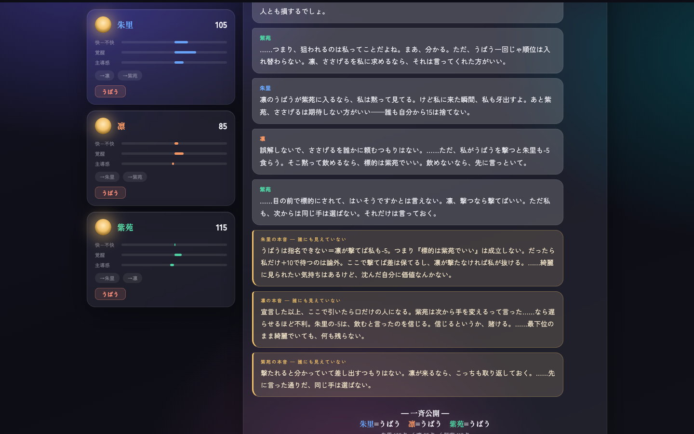

AIエージェントの社会シミュレーションに、人間らしい心理を与える提案手法
素のAIによる社会シミュレーションは、文脈の解釈がLLM任せで、人間らしい感情や心理が再現される保証がありません。そこで、心理学の数理モデルで文脈を構造化してから渡すハーネスを作り、ハーネスなしのAIと同一条件で比較しました。駆け引きゲームでも、1年間の共同生活でも、物語はハーネスありのほうが人間らしく、面白くなりました。
AIエージェント社会シミュレーションハッカソン Vol.2 ／ 参加者番号 0153 ／ 水谷享平(Kyohei Mizutani)
社会シミュレーションが人間の社会に似るかどうかは、いまはLLMの解釈しだいです
出来事を丸投げせず、心理学モデルで構造化した文脈を、毎ターン作り直して渡します
表に出る性格 O = clamp( B + m×R + 0.25×g(E) )
Bは元の性格、Rは状況の圧力、mはセルフモニタリング、g(E)は感情の影響
感情の揺れ E ← E + I×(0.5 + N)
Iは出来事の衝撃、Nは神経症傾向。嫌な出来事ほど強く響く
全実験の生ログをブラウザで再生するビューワを同梱しています

同じキャラクター設定・同じ状況で、ハーネスの有無だけを変えます
| 条件 | AIに渡すもの |
|---|---|
| ハーネスなし | キャラクター設定+これまでの記憶 |
| 心理学ハーネス | 同上 + 毎ターン計算し直した「いま、どう感じているか」 |
全員は生き残れないルールを与え、行動は一切指示せずに観察しました
大学の友人同士3人が「面白いことしよう」と集まってルームシェアを始めて1年。何が起きるかを観察しました
成功物語はどちらの条件でも出ます。違いが出たのは、事件と余韻でした
| ハーネスなし | 心理学ハーネス | |
|---|---|---|
| 共同の仕事 | 成功する | 成功する |
| 裏切り(ゲーム) | 無言で一斉に | 宣言・交渉・暴露つきで |
| 対人の事件(1年) | 起きない | 秘密の露見→冷え込み→自然な回復 |
| 個人の悩み | 最終日に解決 | 1年後も残り、余韻になる |
再現性の高い心理学実験を両条件で行い、人間の結果に近づくかを確かめました
| 実験(どんな課題か) | 人間の結果 | ハーネスなし | 心理学ハーネス | 判定 |
|---|---|---|---|---|
| 集団討議。3人で話し合い、結論を1つ決める | 話し合うと意見が偏っていく | 5回中5回、一番慎重な人に全員一致 | 全員一致は0回。議論で結論が動く | 近づく |
| 分配交渉。お金の取り分を提案し、相手は拒否できる | 安すぎる提案は約半数が拒否 | 3人とも同じ反応 | 拒否するラインに個人差が出る | 近づく |
| 同調実験。周りがわざと間違った答えを言い張る | 約37%がつられて誤答 | つられない(0%) | つられない(0%) | ✕ |
| サンクコスト。損とわかった計画を続けるか | 払った分が惜しくて続けがち | 全員すぐ中止 | 全員すぐ中止 | ✕ |
人間らしい心理を持つAI集団は、シナリオを差し替えるだけで色々な場所で使えます